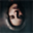
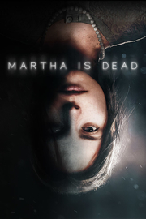

 Martha Is Dead
Detalles
|  | |
| Tiempo de juego | No Jugado |
| Última actividad | Nunca |
| Añadido | 11/6/2024 15:27:55 |
| Modificado | 11/17/2024 14:33:25 |
| Estado de finalización | No Jugado |
| Librería | Playnite |
| Fuente | 1 TB 1 |
| Plataforma | PC (Windows) |
| Fecha de lanzamiento | 2/24/2022 |
| Puntuación de la Comunidad | 77 |
| Puntuación de la Crítica | 73 |
| Puntuación de usuario | |
| Género | Aventura Indie |
| Desarrollador | LKA |
| Editor | Wired Productions |
| Característica | Cloud Saves Compat. Total Con Mando Cromos De Logros De Préstamo Familiar Un Jugador VR VR Keyboard / Mouse VR Motion Controllers VR Seated VR Standing |
| Enlaces | Punto de encuentro Discusiones Guías Noticias Página de la tienda PCGamingWiki Logros |
| Tag | Ambientales Aventura Bélicos Buena trama Cinematográficos Desnudos Drama Exploración Indie Misterio Narración Narraciones dinámicas Oscuros Primera persona Protagonista femenina Psicológicos Segunda Guerra Mundial Suspense Terror Terror psicológico |
Descripción
Martha Is Dead es un oscuro thriller psicológico en primera persona ambientado en la Italia de 1944, que desdibuja los límites entre la realidad, la superstición y la tragedia de la guerra.
Mientras el conflicto entre el bando alemán y el de los Aliados aumenta, aparece el cuerpo profanado de una mujer ahogada... ¡Martha!
Martha está muerta y su hermana gemela Giulia, hija de un soldado alemán, debe lidiar en soledad con el gran trauma de la pérdida y las consecuencias de su asesinato. La búsqueda de la verdad se ve envuelta en un misterioso folclore y el horror extremo de la guerra que se acerca cada vez más.
¿Qué prevalecerá?

Mientras el conflicto entre el bando alemán y el de los Aliados aumenta, aparece el cuerpo profanado de una mujer ahogada... ¡Martha!
Martha está muerta y su hermana gemela Giulia, hija de un soldado alemán, debe lidiar en soledad con el gran trauma de la pérdida y las consecuencias de su asesinato. La búsqueda de la verdad se ve envuelta en un misterioso folclore y el horror extremo de la guerra que se acerca cada vez más.
¿Qué prevalecerá?
Características
- Doblaje en italiano totalmente auténtico
El primer videojuego indie con el italiano como idioma original por defecto para una inmersión total en la historia y los personajes. - De los creadores de The Town of Light
El segundo juego de LKA, la galardonada desarrolladora de The Town of Light y especialista en juegos narrativos basados en la realidad y en temas complejos. - Narrativa multidimensional, profunda y oscura
Martha Is Dead explora la pérdida de seres queridos, las relaciones y el trasfondo psicológico de un período oscuro de la historia a través de los ojos de una joven que busca la verdad, pero que también tiene sus propios secretos. - Descubre una recreación detallada de la campiña italiana
Descubre con total libertad la impresionante campiña toscana a pie, en barco o en bicicleta. La ambientación y el contexto histórico de Martha Is Dead se inspiran en hechos y lugares reales, que se han recreado de forma exacta al más puro estilo de LKA. - Juega con muñecas
Juega con diferentes marionetas en el teatro de marionetas para recuperar recuerdos caídos en el olvido. - Mezcla de folclore y superstición
Desbloquea símbolos y utiliza las cartas del tarot para descubrir nuevos aspectos del juego e invocar el espíritu de la Dama. - La guerra como telón de fondo
Recoge periódicos, telegramas y escucha la radio para estar al tanto de lo que ocurre en el mundo durante la guerra. - Grandeza fotográfica virtual
Disfruta haciendo fotos por puro placer, lo que también te ayudará a avanzar
en la historia y descubrir aún más el mundo del juego. Un simulador te guiará a través de la fotografía de los años 40, donde podrás donde podrás revelar tus fotos reales en un cuarto oscuro totalmente funcional en el juego. - Música italiana auténtica de la época
Sumérgete de lleno en una banda sonora sumamente evocadora y atmosférica que contiene a especialistas en música subacuática, como Between Music y su proyecto Aquasonic; al compositor de The Town of Light, Aseptic Void, y sus tonos oscuros e inquietantes; y a versiones de temas clásicos, como Ave Maria y O Bella Ciao de Schubert, con temas originales escritos e interpretados por Francesca Messina, también conocida como la estrella de la música disco de los años 90, Femina Ridens.